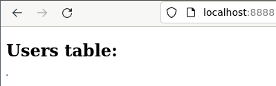
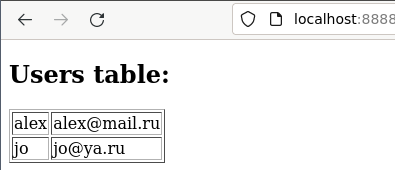

Vagrant Multi-Node
В данной практике рассмотрим такие функции vagrant как создание собственного box из развернутой машины, а также создание нескольких машин в одном Vagrantfile.
В качестве лабораторного стенда попробуем реализовать простую схему развертывания в виде трех виртуальных машин: front - машина отдающая статическую html страницу, back - машина с приложением реализующим бизнес логику, db - машина с базой данных.
Package
Для удобства развертывания можно на основе базового бокса создать боксы с необходимой
конфигурацией, чтобы не производить подготовку при каждом запуске. Для данной операции
есть команда vagrant package, которая создаст и сохранит на файловой системе бокс
из текущей запущенной виртуальной машины.
Front
Создадим подготовленный бокс для виртуальной машины front, за базовый бокс
возьмем ubuntu/lunar64 и напишем Vagrantfile для установки nginx, который
будет отдавать статическую страницу:
Vagrant.configure("2") do |config|
config.vm.box = "ubuntu/lunar64"
config.vm.provision "shell", inline: <<-SHELL
apt-get update
apt-get install -y nginx
SHELL
end
Запустим вм:
$ vagrant up
Bringing machine 'default' up with 'virtualbox' provider...
==> default: Importing base box 'ubuntu/lunar64'...
==> default: Matching MAC address for NAT networking...
==> default: Setting the name of the VM: vagrant2_default_1694453192956_9259
==> default: Clearing any previously set network interfaces...
==> default: Preparing network interfaces based on configuration...
default: Adapter 1: nat
==> default: Forwarding ports...
default: 22 (guest) => 2222 (host) (adapter 1)
==> default: Running 'pre-boot' VM customizations...
==> default: Booting VM...
==> default: Waiting for machine to boot. This may take a few minutes...
default: SSH address: 127.0.0.1:2222
default: SSH username: vagrant
default: SSH auth method: private key
==> default: Machine booted and ready!
Дополнительно сохраним себе приватный ключ для доступа по ssh к виртуальной машине -
он нам понадобится в дальнейшем, путь к нему указан в параметре IdentityFile
в выводе команды vagrant ssh-config:
$ vagrant ssh-config | grep IdentityFile
IdentityFile /home/alex/infra-course/example/vagrant2/vagrant_insecure_key
# сохранить в текущую директорию по именем "key" можно следующей командой
$ vagrant ssh-config | awk '/IdentityFile/{print $2}' | xargs -i cp {} ./key
Сохраним бокс на файловую систему и добавим в локальное хранилище:
$ vagrant package --output front.box
==> default: Attempting graceful shutdown of VM...
==> default: Clearing any previously set forwarded ports...
==> default: Exporting VM...
==> default: Compressing package to: /home/alex/infra-course/example/vagrant2/front.box
$ vagrant box add --name front front.box
==> box: Box file was not detected as metadata. Adding it directly...
==> box: Adding box 'front' (v0) for provider:
box: Unpacking necessary files from: file:///home/alex/infra-course/example/vagrant2/front.box
==> box: Successfully added box 'front' (v0) for 'virtualbox'!
После чего уничтожим вм и удалим бокс из файловой системы:
$ vagrant destroy -f
==> default: Forcing shutdown of VM...
==> default: Destroying VM and associated drives...
$ rm front.box
Back
Для виртуальной машины back подготовим среду для работы приложения, для бэкенда
будем использовать язык golang, так что нам понадобится установить пакеты для сборки.
В качестве базового образа также возьмем ubuntu/lunar64, напишем Vagrantfile:
Vagrant.configure("2") do |config|
config.vm.box = "ubuntu/lunar64"
config.vm.provision "shell", inline: <<-SHELL
apt-get update
apt-get install -y golang
SHELL
end
Проделаем те же действия, что и в предыдущем пункте:
$ vagrant up
Bringing machine 'default' up with 'virtualbox' provider...
==> default: Importing base box 'ubuntu/lunar64'...
==> default: Matching MAC address for NAT networking...
==> default: Setting the name of the VM: vagrant2_default_1694457463073_44923
==> default: Clearing any previously set network interfaces...
==> default: Preparing network interfaces based on configuration...
default: Adapter 1: nat
==> default: Forwarding ports...
default: 22 (guest) => 2222 (host) (adapter 1)
==> default: Running 'pre-boot' VM customizations...
==> default: Booting VM...
==> default: Waiting for machine to boot. This may take a few minutes...
default: SSH address: 127.0.0.1:2222
default: SSH username: vagrant
default: SSH auth method: private key
==> default: Machine booted and ready!
$ vagrant package --output back.box
==> default: Attempting graceful shutdown of VM...
==> default: Clearing any previously set forwarded ports...
==> default: Exporting VM...
==> default: Compressing package to: /home/alex/infra-course/example/vagrant2/back.box
$ vagrant box add --name back back.box
==> box: Box file was not detected as metadata. Adding it directly...
==> box: Adding box 'back' (v0) for provider:
box: Unpacking necessary files from: file:///home/alex/infra-course/example/vagrant2/back.box
==> box: Successfully added box 'back' (v0) for 'virtualbox'!
$ vagrant destroy -f
==> default: Destroying VM and associated drives...
$ rm back.box
DB
Для виртуальной машины с базой данных также используем в качестве базового образа
ubuntu/lunar64, в качестве субд возьмем postgresql. Также при подготовке добавим
конфигурацию, которая даст возможность удаленного подключения из любой доступной сети.
Таким образом получим следующее содержание для Vagrantfile:
Vagrant.configure("2") do |config|
config.vm.box = "ubuntu/lunar64"
config.vm.provision "shell", inline: <<-SHELL
apt-get update
apt-get install -y postgresql
echo "listen_addresses = '*'" >> /etc/postgresql/15/main/conf.d/listen.conf
echo "host all all 0.0.0.0/0 trust" >> /etc/postgresql/15/main/pg_hba.conf
SHELL
end
Проделаем те же действия, что и в предыдущем пункте:
$ vagrant up
Bringing machine 'default' up with 'virtualbox' provider...
==> default: Importing base box 'ubuntu/lunar64'...
==> default: Matching MAC address for NAT networking...
==> default: Setting the name of the VM: vagrant2_default_1694458609907_72643
==> default: Clearing any previously set network interfaces...
==> default: Preparing network interfaces based on configuration...
default: Adapter 1: nat
==> default: Forwarding ports...
default: 22 (guest) => 2222 (host) (adapter 1)
==> default: Running 'pre-boot' VM customizations...
==> default: Booting VM...
==> default: Waiting for machine to boot. This may take a few minutes...
default: SSH address: 127.0.0.1:2222
default: SSH username: vagrant
default: SSH auth method: private key
==> default: Machine booted and ready!
$ vagrant package --output db.box
==> default: Attempting graceful shutdown of VM...
==> default: Clearing any previously set forwarded ports...
==> default: Exporting VM...
==> default: Compressing package to: /home/alex/infra-course/example/vagrant2/db.box
$ vagrant box add --name db db.box
==> box: Box file was not detected as metadata. Adding it directly...
==> box: Adding box 'db' (v0) for provider:
box: Unpacking necessary files from: file:///home/alex/infra-course/example/vagrant2/db.box
==> box: Successfully added box 'db' (v0) for 'virtualbox'!
$ vagrant destroy -f
==> default: Destroying VM and associated drives...
$ rm db.box
Multi-Node
После проделанных действий у нас появилось еще 3 бокса:
$ vagrant box list
back (virtualbox, 0)
db (virtualbox, 0)
front (virtualbox, 0)
ubuntu/lunar64 (virtualbox, 0)
Теперь имея боксы для разных виртуальных машин можно позаботиться их наполнением.
Code
Опишем программный код, который будет деплоиться на каждую машину.
Front
На виртуальной машине front мы будем отдавать статичную html страницу с простым
js скриптом, сохраним его в файл index.html:
<!DOCTYPE html>
<html>
<body>
<h2>Users table:</h2>
<p id="users"></p>
<script>
var req = function() {
var http = new XMLHttpRequest();
http.onload = function() {
const users = JSON.parse(this.responseText);
let text = "<table border='1'>"
for (let x in users) {
text += "<tr><td>" + users[x].name + "</td>";
text += "<td>" + users[x].email + "</td></tr>";
}
text += "</table>"
document.getElementById("users").innerHTML = text;
}
http.open("GET", "http://localhost:8889");
http.send();
}
setInterval(req, 1000);
</script>
</body>
</html>
Back
На виртуальной машине back соберем приложение на golang, которое будет подключаться
к базе данных и отдавать список пользователей из базы в виде json по http.
Опишем это в файле main.go:
package main
import (
"context"
"encoding/json"
"fmt"
"net/http"
"os"
"github.com/jackc/pgx/v5"
)
type users struct {
ID int `json:"id"`
Name string `json:"name"`
Email string `json:"email"`
}
func main() {
ctx := context.Background()
conn, err := pgx.Connect(ctx, "postgres://app:pass@db:5432/app?sslmode=disable")
if err != nil {
fmt.Fprintf(os.Stderr, "Unable to connect to database: %v\n", err)
os.Exit(1)
}
defer conn.Close(ctx)
http.ListenAndServe("0.0.0.0:80", http.HandlerFunc(
func(w http.ResponseWriter, r *http.Request) {
rows, err := conn.Query(ctx, "select * from users")
if err != nil {
fmt.Printf("error db query: %s", err)
return
}
users, err := pgx.CollectRows(rows, pgx.RowToStructByName[users])
if err != nil {
fmt.Printf("error collect rows: %s", err)
return
}
jsonUsers, err := json.Marshal(users)
if err != nil {
fmt.Printf("error marshal json: %s", err)
}
w.Header().Add("Access-Control-Allow-Origin", "*")
w.Write(jsonUsers)
}),
)
}
DB
На виртуальной машине db подготовим пользователя, базу и таблицу. Для этого опишем
файл users.sql:
create database app;
create user app;
grant all on database app to app;
\connect app;
create table users(
id serial primary key,
name varchar(50),
email varchar(100)
);
grant all on all tables in schema public to app;
Vagrantfile
Опишем подготовку виртуальных машин в Vagrantfile:
Vagrant.configure("2") do |config|
config.ssh.private_key_path = "key"
config.vm.define "db" do |c|
c.vm.box = "db"
c.vm.network "private_network", ip: "192.168.56.30"
c.vm.provision "shell", inline: <<-SHELL
su - postgres -c 'psql -f /vagrant/users.sql'
echo 192.168.56.10 front >> /etc/hosts
echo 192.168.56.20 back >> /etc/hosts
echo 192.168.56.30 db >> /etc/hosts
SHELL
end
config.vm.define "front" do |c|
c.vm.box = "front"
c.vm.network "forwarded_port", guest: 80, host: 8888
c.vm.network "private_network", ip: "192.168.56.10"
c.vm.provision "shell", inline: <<-SHELL
cat /vagrant/index.html > /var/www/html/index.html
echo 192.168.56.10 front >> /etc/hosts
echo 192.168.56.20 back >> /etc/hosts
echo 192.168.56.30 db >> /etc/hosts
SHELL
end
config.vm.define "back" do |c|
c.vm.box = "back"
c.vm.network "forwarded_port", guest: 80, host: 8889
c.vm.network "private_network", ip: "192.168.56.20"
c.vm.provision "shell", inline: <<-SHELL
echo 192.168.56.10 front >> /etc/hosts
echo 192.168.56.20 back >> /etc/hosts
echo 192.168.56.30 db >> /etc/hosts
cp /vagrant/main.go /home/vagrant/
cd /home/vagrant/
go mod init example
go mod tidy
go build main.go
/home/vagrant/main &
SHELL
end
end
UP
После всех операций содержимое директории будет выглядеть так:
$ ls
index.html key main.go users.sql Vagrantfile
Теперь можем запустить команду vagrant up:
$ vagrant up
Bringing machine 'db' up with 'virtualbox' provider...
Bringing machine 'front' up with 'virtualbox' provider...
Bringing machine 'back' up with 'virtualbox' provider...
...
==> back: Running provisioner: shell...
back: Running: inline script
back: go: creating new go.mod: module example
back: go: to add module requirements and sums:
back: go mod tidy
back: go: finding module for package github.com/jackc/pgx/v5
back: go: downloading github.com/jackc/pgx/v5 v5.4.3
back: go: downloading github.com/jackc/pgx v3.6.2+incompatible
back: go: found github.com/jackc/pgx/v5 in github.com/jackc/pgx/v5 v5.4.3
back: go: downloading github.com/stretchr/testify v1.8.1
back: go: downloading github.com/jackc/pgpassfile v1.0.0
back: go: downloading github.com/jackc/pgservicefile v0.0.0-20221227161230-091c0ba34f0a
back: go: downloading golang.org/x/crypto v0.9.0
back: go: downloading golang.org/x/text v0.9.0
back: go: downloading github.com/davecgh/go-spew v1.1.1
back: go: downloading github.com/pmezard/go-difflib v1.0.0
back: go: downloading gopkg.in/yaml.v3 v3.0.1
После чего можно открыть страницу http://localhost:8888 и убедиться, что она работает: 
Добавим пару пользователей в нашу базу:
$ vagrant ssh db -c 'sudo -u postgres psql'
could not change directory to "/home/vagrant": Permission denied
psql (15.4 (Ubuntu 15.4-0ubuntu0.23.04.1))
Type "help" for help.
postgres=# \c app
You are now connected to database "app" as user "postgres".
app=# insert into users (name,email) values ('alex', 'alex@mail.ru');
INSERT 0 1
app=# insert into users (name,email) values ('jo', 'jo@ya.ru');
INSERT 0 1
\q
После чего можно убедиться, что они попали на наш фронтенд: 
После того как мы убедились, что связка наших виртуальных машин с приложениями на них функционирует как ожидается, можно уничтожить данный стенд:
$ vagrant destroy -f
==> back: Forcing shutdown of VM...
==> back: Destroying VM and associated drives...
==> front: Forcing shutdown of VM...
==> front: Destroying VM and associated drives...
==> db: Forcing shutdown of VM...
==> db: Destroying VM and associated drives...